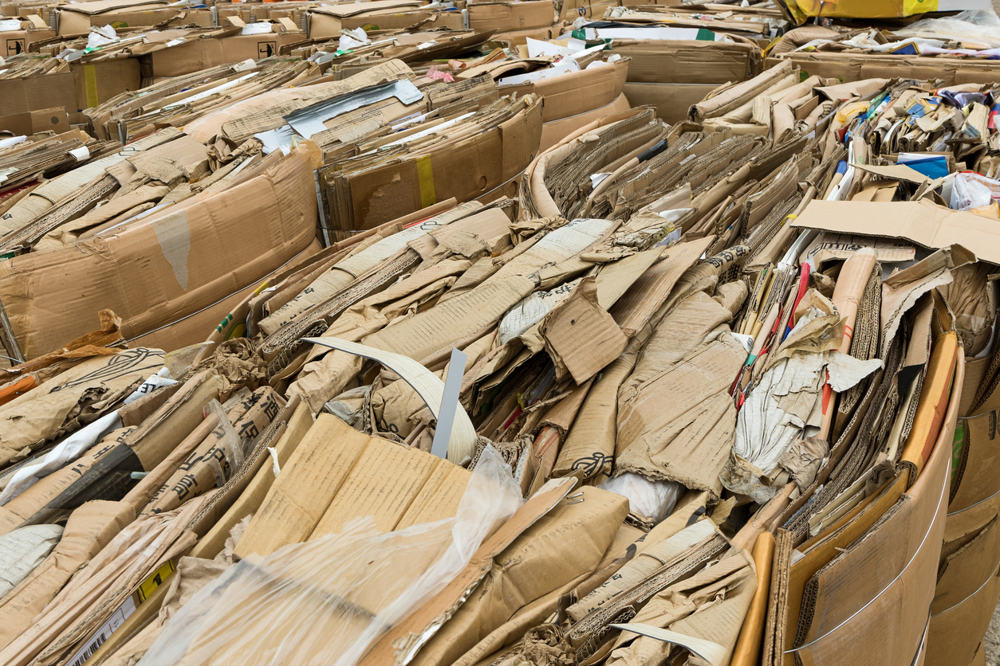
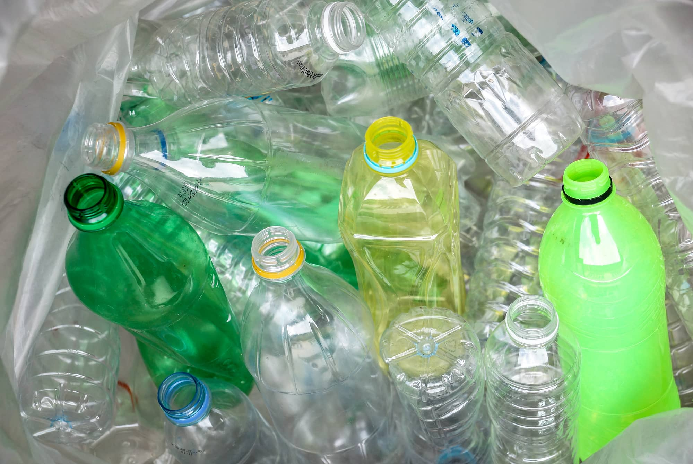
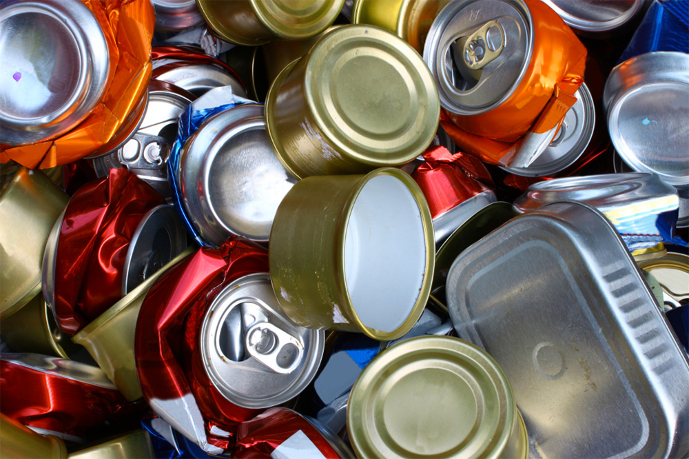

Carton

Plastico

Al igual que el reciclaje de cartón, el reciclaje de papel es muy sencillo. En efecto, el papel está hecho de fibras vegetales, generalmente obtenidas de la madera. Llamadas celulosas, estas fibras son biodegradables, reciclables y no perjudiciales ni para la salud ni para el medio ambiente. Los elementos susceptibles de ser reciclados son:
Por otro lado, los siguientes tipos de papel no pueden ser reciclados y no deberán ir en esta sección: